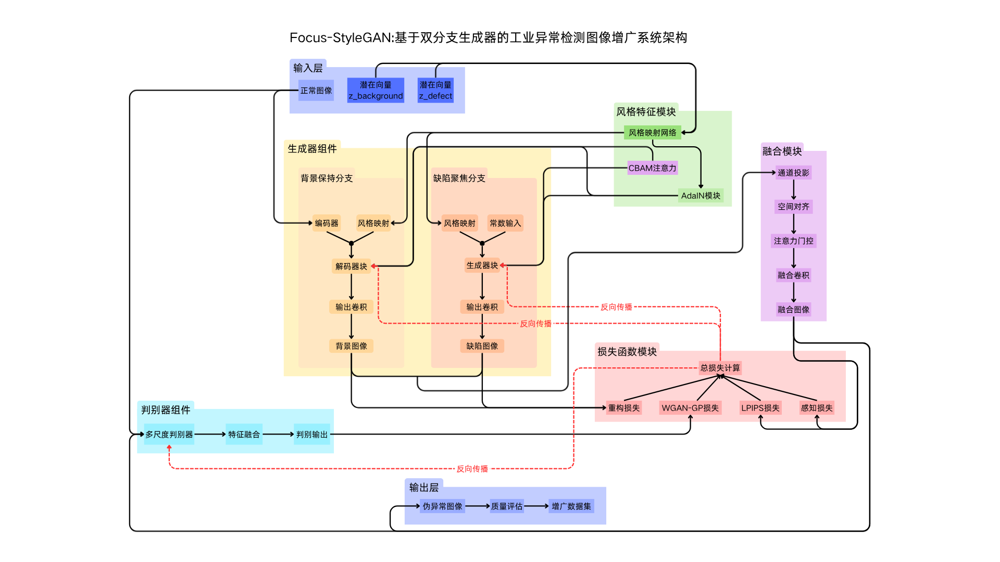

基于生成对抗网络的工业异常检测图像样本增广系统
Focus-StyleGAN模型输入输出展示
项目概述
本系统基于Focus-StyleGAN架构，针对工业异常检测任务中的样本不平衡问题，提出了一种新颖的图像增广方法。系统能够生成高质量的伪异常图像，有效扩充训练数据集，提升异常检测模型的性能。
双分支生成器
缺陷聚焦分支和背景保持分支协同工作
多尺度判别器
集成注意力机制的PatchGAN结构
自适应风格控制
AdaIN和CBAM模块精细化控制生成风格
超参数自动优化
基于Optuna的智能超参数搜索
模型架构
Focus-StyleGAN是基于StyleGAN的改进架构，包含以下关键组件：
- 缺陷聚焦分支: 生成缺陷区域特征
- 背景保持分支: 保持正常图像背景
- 风格映射网络: 控制生成图像的风格
- 融合模块: 自适应融合两分支输出
- 多尺度判别器: 集成注意力机制的PatchGAN

Focus-StyleGAN模型架构图
模型输入输出展示
输入图像
点击或拖拽上传图像
支持JPG、PNG格式，最大5MB
预览区域
处理过程
图像预处理
调整大小、归一化
特征提取
提取正常图像特征
缺陷生成
生成伪异常区域
图像融合
融合缺陷与背景
模型正在生成图像，请稍候...
生成结果
生成结果将显示在这里
增广图像评估
系统从缺陷置信度、缺陷位置与类型、生成质量以及FID、IS、LPIPS、PSNR等多个维度对增广结果进行综合评估，确保生成的伪异常图像在真实性和多样性之间取得平衡。
评估指标说明
以下为「增广图像评估」区域各项指标的详细说明，点击增广图像可切换查看对应评估结果：
缺陷类型
基于 Hough 线检测、Blob 分析、轮廓复杂度对差异图进行多维度分类，输出划痕、斑点、纹理异常或不规则缺陷
异常显著度
综合差异图均值、95分位数、最大值计算的异常显著程度，反映缺陷区域与正常区域的视觉偏离程度
缺陷位置
根据高差异区域质心坐标判定缺陷所在方位，分为中心区域及左上、右上、左下、右下等方向
生成质量
基于输入-输出像素差异的综合质量评级，综合考虑整体偏差与局部异常程度
FID (Fréchet Inception Distance)
衡量生成图像分布与真实分布的 Wasserstein 距离，数值越低表示生成图像越接近真实
IS (Inception Score)
衡量生成图像的清晰度与类别多样性，数值越高表示图像质量越好、类别覆盖越广
LPIPS (感知相似度)
Learned Perceptual Image Patch Similarity，基于深度特征衡量图像对之间的感知差异，值越低越相似
PSNR (峰值信噪比)
Peak Signal-to-Noise Ratio，衡量图像重建质量与失真程度，单位为 dB，数值越高表示失真越小